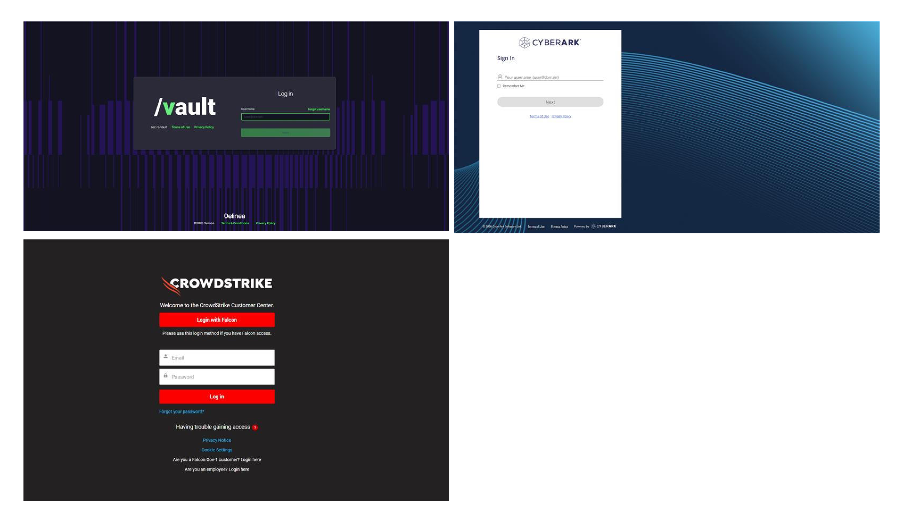
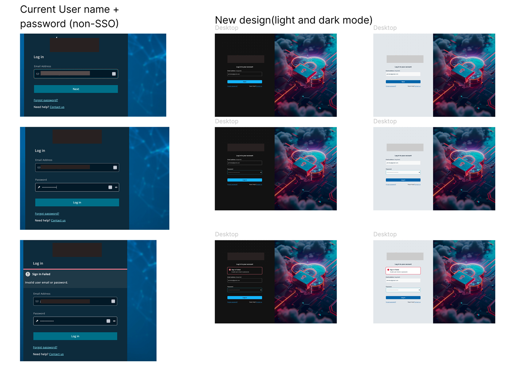
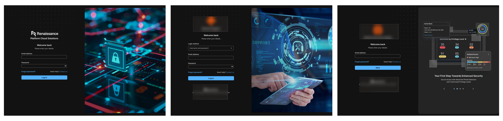
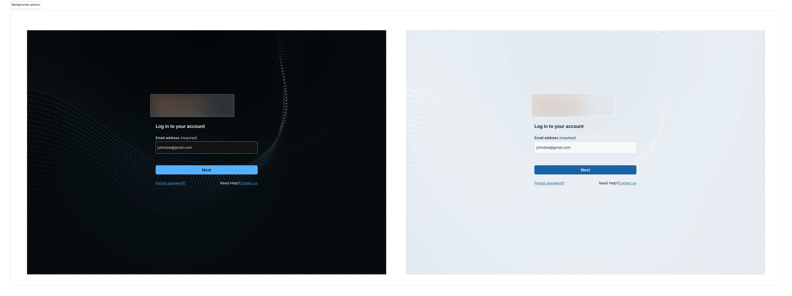

04
Case Study
Login Redesign
The login page had been stalled since 2023. A mockup I put together in 2025 got it moving again, and then it turned into something bigger than a visual refresh.
- 15+ IAM error states mapped to specific, actionable messages — SSO-related support tickets dropped post-launch
- Progressive disclosure flow (Email → Auth Method detection → MFA) eliminated redundant fields and aligned with how SSO actually works
- First login surface built end-to-end on Shield Design System tokens — WCAG AA compliant for federal procurement requirements
The project had been sitting since 2023, not because the design was complicated, but because nobody had written down what should happen after a failed MFA attempt. Or a locked account. Or an expired SSO session. I counted 15 distinct failure modes. The original design handled one of them.
The Context
A 2-year stall. Restarted in 3 days.
This project had been stuck since 2023. Undefined requirements, no clear owner. In 2025, a mockup I put together sparked renewed interest. I was handed a "visual refresh." It became more than that.
The login page is the first surface every cloud customer sees permanently. When accounts activate, users are moved from product-specific URLs to this centralised page with no opt-out. A dated, inconsistent experience for a cybersecurity company creates a trust problem before anyone has even signed in.
I counted 15 distinct failure modes. The original design handled one of them.

// Competitor audit: how Vault, CyberArk, and CrowdStrike handle authentication entry
What I Changed
Logic first. Then visuals.
01
Microcopy that reflects the action
"Confirm" → "Verify", "Send Code", "Reset Password." "Authenticating..." → "Signing you in..." with a visible loading indicator. Every label now reflects consequence, not just direction.
Effect: In security-critical flows, ambiguous labels are a trust problem, not just a UX problem. Users now understand what they’re committing to before they act. "Stuck login" support tickets dropped — users could tell the system was working, not frozen.
02
A design system login — for the first time
Brought the login page into Shield Design System. Same typography, spacing scales, button components, and focus states as the core product. The flow now feels like a continuation of the platform, not a separate site.
Effect: The login surface stopped looking like a different product. For security professionals trained to flag unfamiliar login pages as phishing attempts, visual consistency is a trust signal, not just an aesthetic one.
03
Authentication errors moved to banners
Initially designed inline errors on form fields. Then realised authentication errors come from the backend — not the UI layer. Inline form errors were architecturally wrong for this context. Shifted to banner alerts.
Effect: Error placement now reflects how the system actually works. A small change in the file. The reasoning behind it — that design has to reflect system architecture — changed how I approach all error state work.

// Current state → Design V1 → Design V2
Outcome
Shipped. Cleaner handoff. Fewer open questions.
✓
Unified visual language across login, MFA, error states, Forgot Password, and Context Switching — all aligned to the design system for the first time.
↓
Reduced "stuck" support tickets. Explicit status messaging addressed the most common user confusion during authentication latency.
✓
Engineering had what it needed. Mapped logic, edge cases, and error states before handoff eliminated the ambiguity that had kept this project stalled for two years.
✓
15+ IAM failure modes mapped to specific, actionable messages — SSO-related support tickets dropped post-launch.
"Once I mapped all 15 failure modes, the engineers stopped asking clarifying questions. The handoff took less back-and-forth than anything I’d shipped in the previous six months."

// Current (left) vs new design — light and dark mode

// Design exploration — multiple directions explored before Option 9

// Final design — Option 9. The version that shipped.